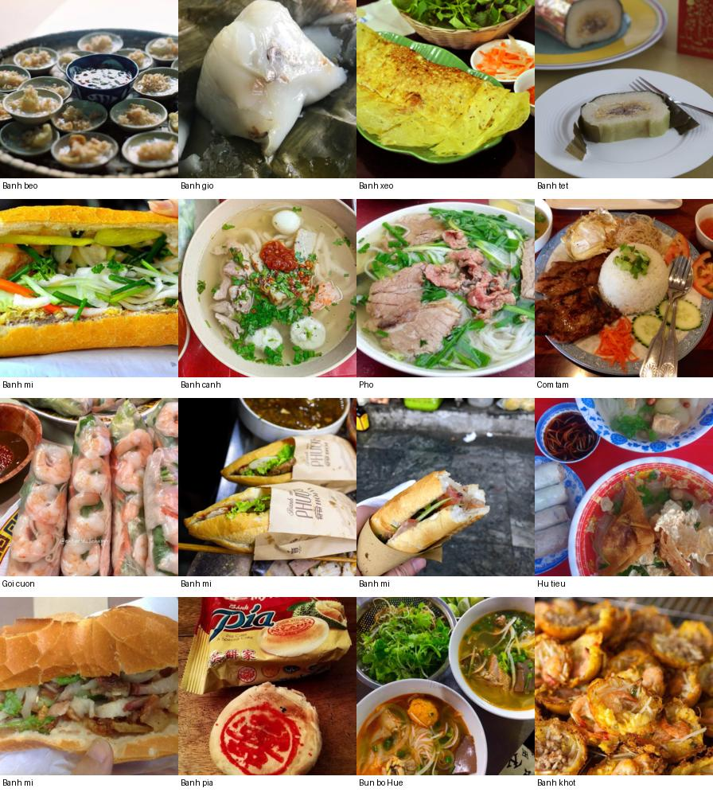
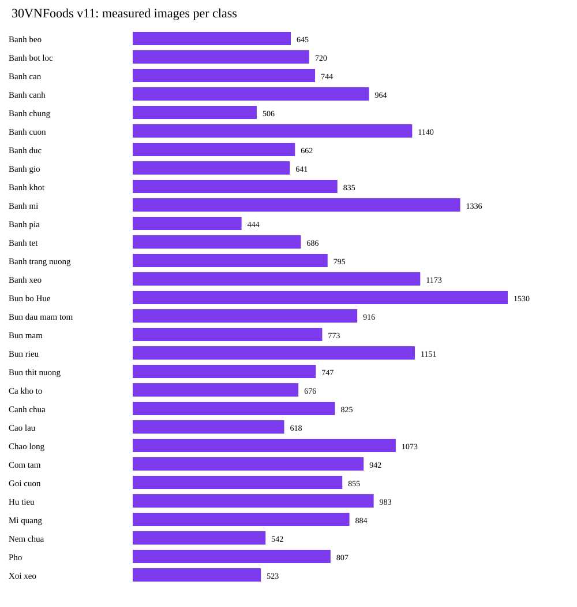

Deep Learning on Large-Scale Data and Specialized Tasks
Deep Learning on Large-Scale Data for Specialized Computer Vision or Language Tasks.
Assignment Information
Group Members
| # | Full Name | Student ID | Role | GitHub |
|---|---|---|---|---|
| 1 | Hoang Kim Cuong | 2352145 | Work on Assignment 1 | @DiamondHoang |
| 2 | Phan Tan Loc | 2352712 | Work on Assignment 2 | @cspaull |
| 3 | Tran Manh Thang | 2353124 | Work on Assignment 3 | @Winuim12 |
Dataset Proposal
30VNFoods
Vietnamese food recognition across 30 categories, with similar dishes, varied preparation, cluttered backgrounds, and changing lighting.

Dataset Name, Source, Version, and License
30VNFoods
Vietnamese Foods Image Dataset
- Source
- View dataset on Kaggle ↗
- Dataset version
- Kaggle version 11Version used for this project
- Data checked
- 03 Oct 2026Date of the dataset audit
- License
- MIT LicenseCopyright © 2021 Quan DangLICENSE file on Kaggle ↗
Task, Input, and Output Definitions
Image resized and cropped to the standard resolution.
Recognize the Vietnamese dish in each image.
The highest-scoring class is the prediction.
Number of Samples and Annotation Types
Original dataset across 30 Vietnamese food classes. Each image is one sample.
Each image is labeled with one of 30 food names, such as Pho or Banh mi. Images are grouped into folders named after the food; the folder name is used as the label.
Preliminary Distribution Analysis

Bun bo Hue has the most images (1,530), while Banh pia has the fewest (444). The ratio is 1,530 / 444 ≈ 3.45.
Median width is 1,000 pixels and median height is 720 pixels. Widths range from 100 to 7,360 pixels; heights range from 83 to 5,616 pixels. These are separate width and height statistics, rather than a single shared resolution.
Data-Splitting Plan
Proposed class-stratified 70% / 15% / 15% split after cleaning, with seed = 42. Keep all 30 classes.
Split Unit Used to Prevent Leakage
- Check exact copiesKeep one copy when identical images share a label. Exclude identical images with conflicting labels pending manual review.
- Keep similar images togetherThe provisional split keeps automatically flagged near-duplicate candidates in the same set. Review these candidates and source identities before finalizing the split.
- Prevent overlapThis reduces the chance that the model is evaluated on a copy of a training image. Apply augmentation and fit dataset-derived normalization statistics using training data only.
Evaluation Metrics
Calculate F1 for each food class, then average across all 30 classes. Each class has equal weight, including those with fewer images.
Accuracy measures the proportion of correctly classified images. Precision, recall, and F1 are also reported for each food class.
A 30 × 30 matrix shows the true and predicted food classes, revealing which dishes the model commonly confuses.
Baseline Plan
Start with randomly initialized weights. This simple model provides a reference for comparison with the pretrained model.
Each image produces 30 class scores. The class with the highest score is the predicted food name.
Train for up to 20 epochs. Use the same data split as the pretrained model for a fair comparison.
Keep the checkpoint with the highest validation Macro-F1. Report test Accuracy and Macro-F1, along with per-class scores and a confusion matrix.
Planned Pretrained Models
Candidates under consideration; the final model has not been selected.
- EfficientNet-B0
- ResNet-50
- ConvNeXt-Tiny
- ViT-B/16
- MobileNetV3-Large
Compute Estimate
Experiments are planned to run on available local hardware or a cloud GPU environment. Compute requirements will depend on the selected model and training configuration. Training time, memory usage, and storage needs will be estimated through a short trial run before the main experiments.
Problem Statement
Assignment 2 reuses and extends the pipeline skills from Assignment 1 on a larger and more specialized problem. Each group works deeply on one approved track; breadth across all tracks is not required.
Chosen Task Track
Track 1: Image Classification — Fine-grained Vietnamese Food Recognition across 30 categories (30VNFoods).
Learning Objectives
- Propose, justify, and obtain approval for a dataset and task protocol suitable for specialized deep learning work.
- Adapt an end-to-end pipeline to larger-scale data and task-specific annotations/metrics.
- Compare a simple baseline with at least one pretrained or modern model under a documented fine-tuning strategy.
- Design and interpret at least one controlled ablation or factor experiment.
- Analyze errors, compute cost, and reproducibility for a specialized computer vision or language task.
Dataset Description & EDA
Dataset Proposal & Approval Record
Status: Pending Instructor Review (Submitted M1 Proposal)
Dataset details, the preliminary audit, data split, metrics, and model candidates are listed in the Assignment 2 Dataset Proposal section above.
Task-Specific EDA Expectations (§22)
Detailed exploratory data analysis (per-class frequency histogram, resolution heatmaps, RGB channel mean/std distributions, and example batches per dish category) will be generated and visualized here following formal approval of Milestone M1.
Methodology
Pipeline Overview
Technical Requirements
- 1. Simple Baseline: A lightweight baseline model suitable for the task.
- 2. Pretrained / Modern Model: Pretrained backbone with a documented fine-tuning procedure (freeze vs. full fine-tune).
- 3. Controlled Experiment: At least one controlled factor study (e.g. freeze vs. fine-tune, augmentations, loss functions, backbones).
- 4. Metrics & Compute Cost: Task-specific metrics (mAP, mIoU, Rank-1/mAP, RMSE/δ, etc.) + training/inference compute cost.
[Fill in here] — Architecture details, parameter counts, loss formulations, training configurations, optimizer, lr schedule, hardware.
Experimental Setup
[Fill in here] — For each experiment: state hypothesis, changed factor, fixed factors, evaluation metrics, and decision criteria. Include hardware, software versions, seeds, checkpoint selection rules.
Results
[Fill in here] — Quantitative comparison tables, loss/metric curves, checkpoint selection, compute time, and qualitative visualization results.
Comparison & Discussion
[Fill in here] — Comparison of baseline vs. modern models; compute-cost vs. performance trade-offs; hypothesis validation.
Error Analysis
[Fill in here] — Error categories, failure cases, ablation analysis, and proposed improvements.
Limitations & Conclusion
[Fill in here] — Limitations, generalization capabilities, future directions, and concise project summary.
Deliverables & Links
AI Usage Disclosure
Assignment 2 AI Usage Disclosure
Work on Assignment 2 has not started yet, so no AI tool has been used for its content, code, experiments, or results.
One disclosure already applies: the skeleton of this page — its HTML structure, section layout, and the shared stylesheet — was drafted with ChatGPT (OpenAI, model GPT-5.6) by Tran Manh Thang (2353124) in September 2026, then reviewed and edited by the group against handbook §2.2. No text on this page states a result.
This section will be completed with the full per-tool log required by handbook §5.2 as Assignment 2 progresses. The running log is kept in AI_USAGE.md.